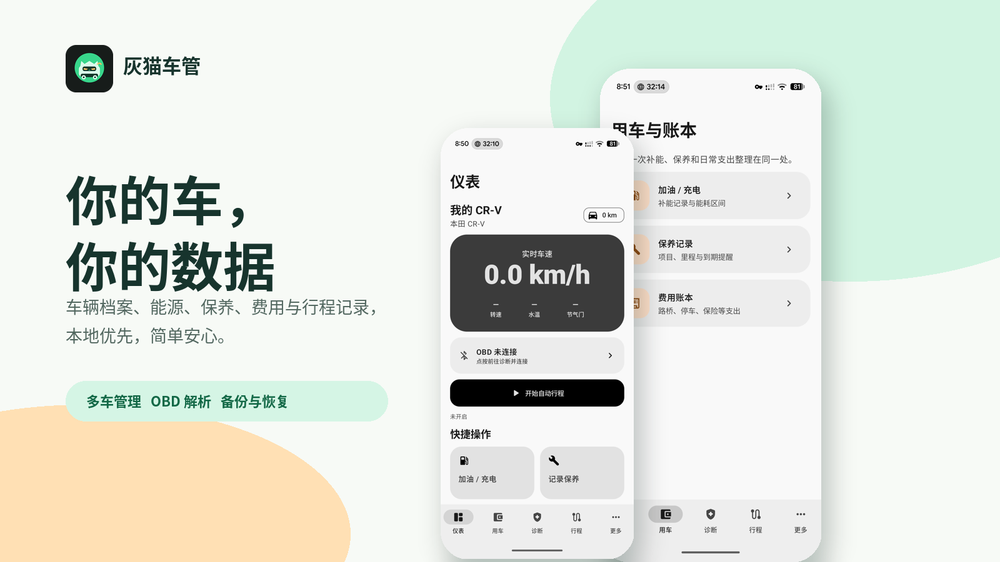
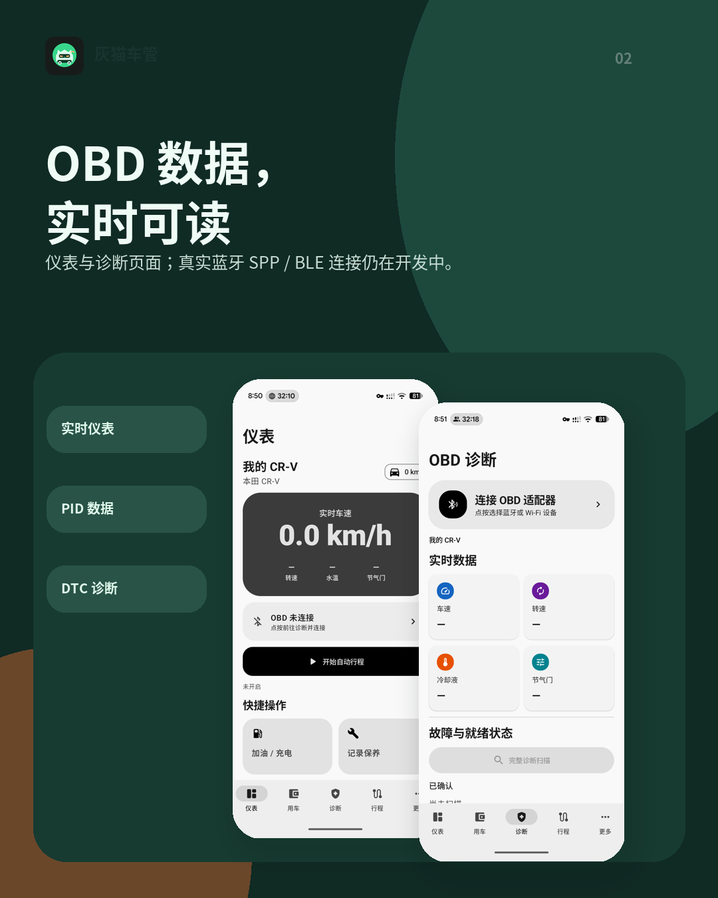

Основные функции
- Multiple vehicle records
- Fuel and charging records
- Maintenance and expense records
- Trip records
- Room persistence and DataStore settings
- OBD parsing core and simulated transport
Local-first vehicle management
A multi-vehicle Android manager for vehicle records, energy, maintenance, expenses, trips, settings and backup.
Скачать ↓
Keeping vehicle, fuel or charge, maintenance, expense and trip records together, with due-date or odometer-based maintenance fields.
The project describes a local-first design using Room and DataStore. Consult the linked policy for the exact handling and backup boundary.
Real Bluetooth SPP/BLE OBD transport is explicitly still in development. Reminder scheduling is a daily WorkManager skeleton. OBD features must not be treated as a replacement for professional diagnosis.



Устанавливайте только по официальным ссылкам ниже.